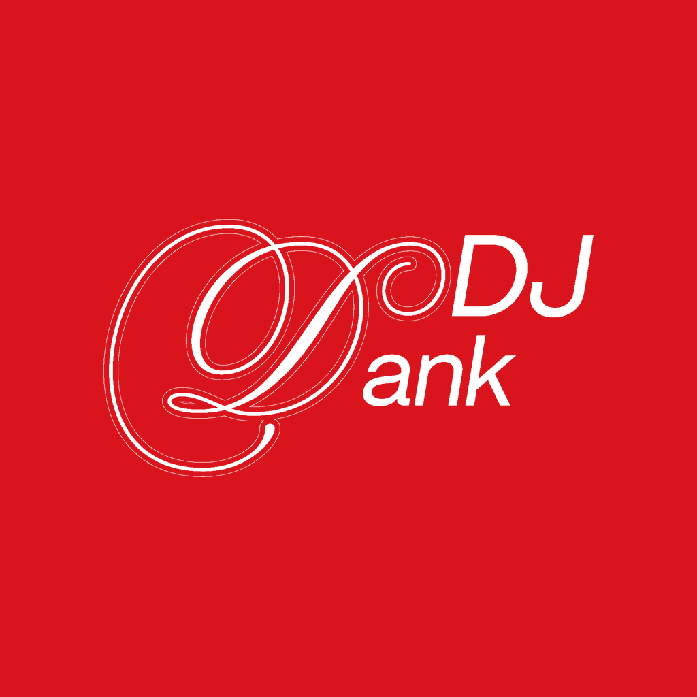

Herramienta personal de DJ Dank (Maximiliano Sotelo, Buenos Aires, Argentina) para subir sus propios videos de DJ sets a su cuenta de TikTok @dj_dank. Los videos llegan a la bandeja de TikTok del usuario, que los revisa y los publica él mismo desde la app.
Personal tool used by DJ Dank to upload his own DJ set videos to his TikTok account @dj_dank. Videos are sent to the user's TikTok inbox; the user reviews and posts them from the TikTok app.
Política de privacidad / Privacy Policy · Términos del servicio / Terms of Service
Contacto / Contact: direct message to @dj_dank on TikTok